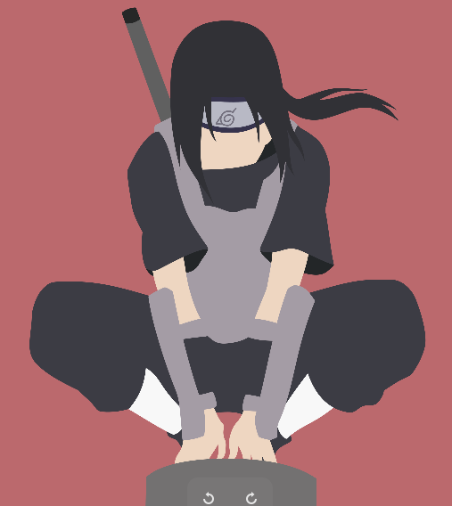
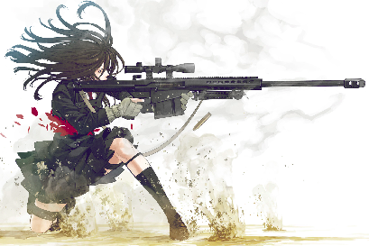
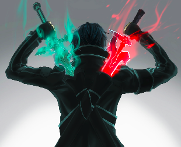

<!DOCTYPE html>
<html>
  <head>
    <title>Z-Gamez</title>
    <meta charset="UTF-8">
    <mega http-equiv="X-UA-Compatible" content="IE=edge"></mega>
    <meta name="viewport" content="width=device-width, maximum-scale=1.0 user-scalable=no">
    <link rel="stylesheet" href="../css/main.css">
  </head>
</html>
<body>
  <div class="buscador">
    <form>
      <input class="buscador__input" type="text" placeholder="Playstation">
    </form>
  </div>
  <header class="encabezado--con-filtros">
    <h2>20 Resultado para "Playstation"</h2>
    <div class="filtros"><span>Filtrar Por</span><a href="#">°</a><a href="#">O</a></div>
  </header>
  <section class="contenido">
    <div class="caja"><a class="caja__imagen" href="#"></a>
      <div class="caja__contenido"><span class="caja__categoria">Video</span>
        <h3>Apex Legends Temporada2: un nuevo trailer muestra cambios al mapa</h3>
        <p>Dos nuevos trailers de Apex Legends muestran lo que nos espera en la temporada 2 del batle royale de respawn</p>
      </div>
      <div class="estadistica--articulos">
        <ul>
          <li><i>#O</i><span>275</span></li>
          <li><i>#0</i><span>275</span></li>
          <li><i>#0</i><span>12</span></li>
        </ul>
      </div>
    </div>
    <div class="caja"><a class="caja__imagen" href="#"></a>
      <div class="caja__contenido"><span class="caja__categoria">Video</span>
        <h3>Ya salio la reseña de crash Team Racing Nitro Fueled</h3>
        <p>Veinte años después del lanzamiento original, crash team racinf ha recibido un remake total que logra mantener todos los aspectos del original.</p>
      </div>
      <div class="estadistica--articulos">
        <ul>
          <li><i>#O</i><span>275</span></li>
          <li><i>#0</i><span>275</span></li>
          <li><i>#0</i><span>12</span></li>
        </ul>
      </div>
    </div>
    <div class="caja"><a class="caja__imagen" href="#"></a>
      <div class="caja__contenido"><span class="caja__categoria">Video</span>
        <h3>Final fantasy XIV recibirá una serie live-action en televisión</h3>
        <p>Final fantasy XIV online recibirá una adaptación a TV de parte de Square Enix con Sony Pictures Televisión y Hivemind.</p>
      </div>
      <div class="estadistica--articulos">
        <ul>
          <li><i>#O</i><span>275</span></li>
          <li><i>#0</i><span>275</span></li>
          <li><i>#0</i><span>12</span></li>
        </ul>
      </div>
    </div>
  </section>
</body>